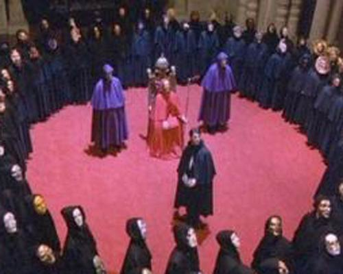

Entertainment Portrayal
The portrayal and depiction of cults in entertainment such as television shows, movies, and documentaries, is basically where the general population gets their initial idea of these groups and what they do. Where as in news outlets at least give concrete stories with proven facts, entertainment outlets use these stories to create horrors that are usually unimaginable. Personally, this is why I decided to use this subject topic for this site. As an avid horror movie fan, I have seen dozens of programs that have cult-related stories. It got me scared; it got me thinking about the factuality of cults versus what I see in these movies. In most of these outlets, cults are seen as horrifying. They are always secretive, crazy groups of people who end up torturing or sacrificing victims to their diety for the sake of their organization. Though history proves certain cases like this exist, it is the boiled down notion of cults in today's society: Cults are evil. The photo below depicts a seen from Stanley Kubrick's Eyes Wide Shut, a personal favorite movie depicting cult activity. After all of the research I have collected, I learned to not be afraid of what I see unless it seems reasonable. Which is why cults are still one of the most disturbing, horrifyingly scary aspects of the American psyche to date.
